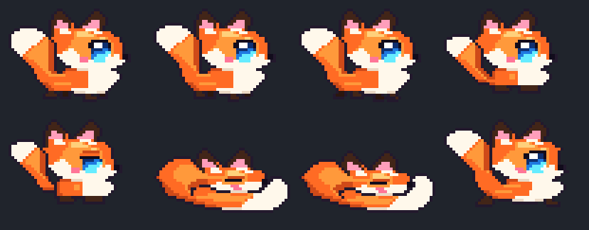

Zero-dependency 16-bit pixel-art overlays designed for OBS / Streamlabs Browser Sources with transparent backgrounds and URL query parameter controls.
stream-fox.html)48×36 side-profile kawaii chibi fox with walk, sit, tail-wag, pounce, and 2-frame curled bushy-tail sleep animations.

Walks, sits, wags, and naps along the bottom edge of your stream scene.
Open Overlay →Stays curled up in a fox-donut with gentle breathing right on top of a webcam border.
Open Overlay →Full autonomous roaming along the bottom without Zzz... text bubbles.